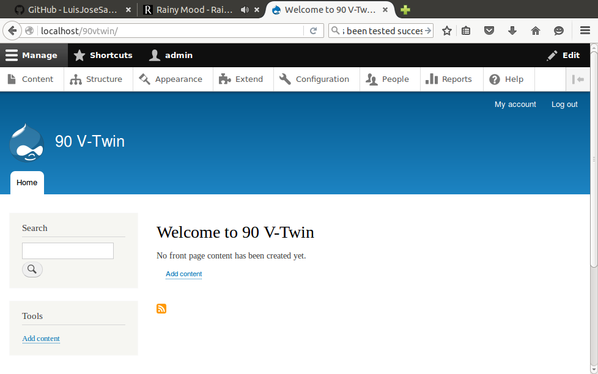
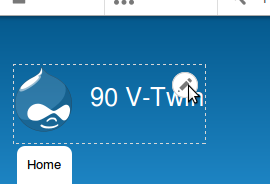

90VTwin - Motorcycles Dealer
A complete web site with news, about page, contact form, etc. from scratch.
Aquí va la captura de la web terminada!!!!
Tasks
- Install Drupal 8 (locally)
- Configure
- Create sections
- Home
- Services
- Sale of motorbikes
- Mechanics workshop
- Parts tore
- About
- Contact
- News
Standard Drupal 8 installation

Basic configuration
-
Click on the header to configure block

-
Set title and logo
Instalación de módulos
-
Instalar módulo "Admin menu".
-
Módulos → Activar Update manager
-
Módulos → Instalar nuevo módulo
-
En otra pestaña, ir a www.drupal.org
-
Buscar admin menu
-
Seleccionar Modules
-
Seleccionar Administration menu
-
Copiar la ruta del enlace
-
Pegar la ruta en Instalar desde una URL
Más ajustes
-
Desactivar la barra de menús que viene por defecto:
Módulos → Desactivar Toolbar
-
Instalar CKEditor. Este módulo sustituye los "textarea" por un editor visual.
-
Instalar IMCE. Se integra con CKEditor y permite subir archivos al servidor.
-
Enlazar CKEditor con IMCE:
-
Módulos → CKEditor → Configurar
-
Full HTML → editar → FILE BROWSER SETTINGS
-
File browser type → IMCE
Sección "Nuestros Servicios"
Contenido → Agregar contenido → Página básica
Título → Nuestros servicios → Imagen y texto
Opc. del menú → Marcar "Proporciona un enlace de menú"
Opc. del ruta URL → Alias de URL → servicios
Sección "Compra-venta de motos"
Contenido → Agregar contenido → Página básica
Título → Compra-venta de motos → Imagen y texto
Opc. del menú → Marcar "Proporciona un enlace de menú"
Opc. del ruta URL → Alias de URL → compraventa
Colocar el menú principal en la barra lateral
Estructura → Bloques
Arrastrar "Menú principal" al bloque "Primera barra lateral"
Añadir "Taller" y "Tienda de accesorios"
Se añaden las secciones de igual forma que con la sección "Compra-venta de motos"
Añadir la sección "Dónde estamos"
Contenido → Agregar contenido → Página básica
Buscar la dirección en Google Maps
Colocar el enlace de Google Maps en un iframe
Añadir noticias en la página principal
Contenido → Agregar contenido → Artículo
Añadir texto e imagen
Dentro de "Opciones de publicación" debe estar marcada la casilla "Promovido a la portada"
Formulario de contacto
-
Activar el módulo "Contact"
-
Dar permiso a usuarios anónimos
-
Estructura → Formulario de contacto → Editar
-
Añadir el menú "Contacto":
Estructura → Menús → Menú principal → Añadir enlace